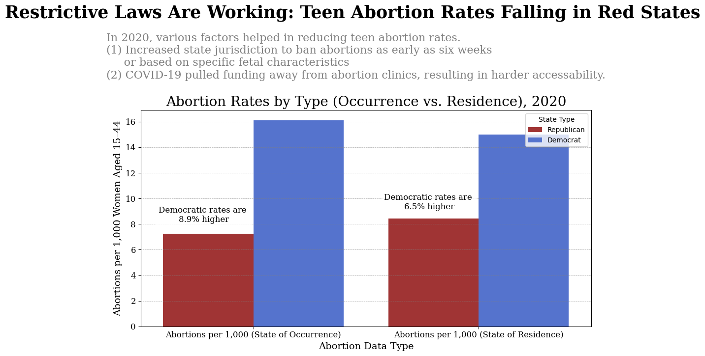
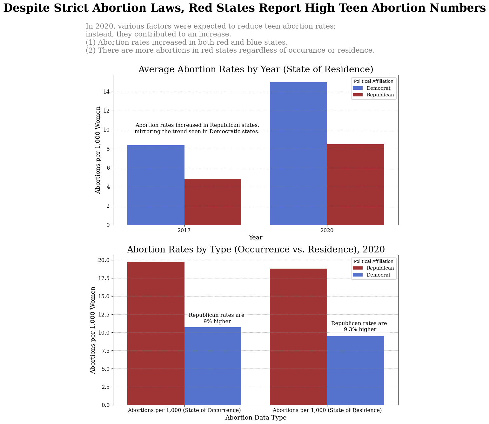

Proposition: Abortion Laws are Effective in Reducing Abortion Rates Across the United States.
FOR the Proposition

Design Decisions and Rationale:
- Identifying States' Political Affiliation (Score: 2) : To make the visualization easily digestible, I decided to focus on whether or not the state was red or blue. To accurately label them, I researched the results of the 2020 Electoral College. This design decision is fully earnest since I included all the datapoints from the 50 states and accurately labeled them to their corresponding parties, even swing states. This helped make my visualization persuasive because it shows the stark difference in between the red and blue bar. At first glance, the audience can easily tell that red states have a smaller abortion rate, most likely due to stricter abortion laws. I considered showing multiple states so that there was more data on the visualization, but I found that too noisy and the simply classification of blue or red was easier to understand and digest.
- Textual Context (Score: 1.5): I wanted to provide background information on why the abortion rates might have contributed to how low they are in the red states. It also makes the visualization seem more credible because I’m sourcing real events and jurisdictions that occurred in 2020 that make plausible sense as to why abortion rates in red states are drastically lower than the blue states. However, if you look closely at the x-axis, you can tell that the trend of abortion rates from state of occurrence to state of residence shows an increase. This may be data used to back up the fact that the restrictive laws do not stop abortion from happening; those who seek abortion in a red state might go to a neighboring blue state to get the procedure. However, most people tend to see the images first and remember it the longest, and the blue bar being greater than the red bar will tell the story that abortion laws in red states are keeping their rates low.
- RATIONALE_3
AGAINST the Proposition

Design Decisions and Rationale:
- RATIONALE_1
- RATIONALE_2
- RATIONALE_3
Final Reflection
[WRITE FINAL REFLECTION PARAGRAPHS HERE.]